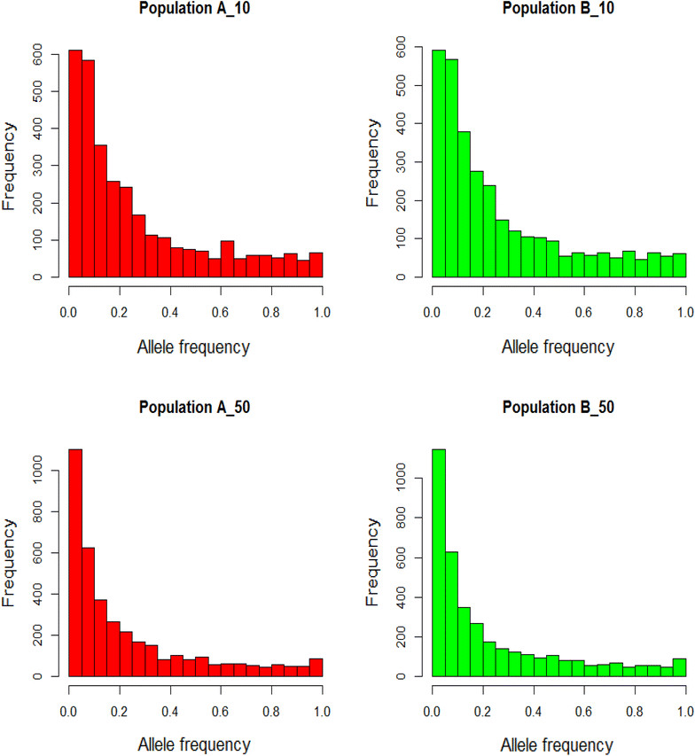

유전체 분석을 위한 파이썬 라이브러리 소개
Intro
생물정보학 분야에서 유전체 분석을 위해 파이썬은 매우 유용한 언어 중 하나입니다.(R도 정말 유용합니다.) 파이썬이 데이터 분석, 머신 러닝, 딥 러닝 등 다양한 분야에서 활용될 수 있기 때문입니다. 또한, 파이썬은 다양한 생물학 데이터를 처리하고 시각화하는 데 매우 효과적입니다. 이번 포스팅에서는 유전체 분석을 위해 유용한 파이썬 라이브러리 몇 가지를 소개합니다.
소개되는 라이브러리는 목차를 참고해주세요.
Biopython
Biopython은 파이썬에서 생물학 데이터를 처리하는 데 사용되는 강력한 라이브러리입니다. 이 라이브러리는 DNA, RNA 및 단백질 시퀀스 데이터와 관련된 다양한 작업을 수행할 수 있습니다. 예를 들어, 시퀀스를 로드하고 저장하거나, BLAST, Clustal 및 BLAT과 같은 다양한 시퀀스 정렬 및 유사성 검색 도구를 사용할 수 있습니다.(실제로 기능이 매우 많아서 꼭 한번 살펴보시길 바랍니다.)
Biopython을 사용하면 시퀀스를 다루는 것 외에도, 파일 입출력, 의생명데이터베이스 쿼리, 그리고 시퀀스 시각화 등 다양한 작업을 수행할 수 있습니다. Biopython은 파이썬 2.x 및 3.x 버전을 지원하며, 다양한 운영체제에서 사용할 수 있습니다.
Biopython은 생물정보학 분야에서 다양한 연구에 활용될 수 있는 매우 방대하고 유용한 라이브러리입니다. 하지만, 이러한 방대한 기능을 활용하기 위해서는 파이썬 프로그래밍에 대한 기초적인 이해와 함께, 생물학적 지식도 함께 필요합니다.
# Biopython을 이용하여 FASTA 파일을 읽어들이는 예시 코드
from Bio import SeqIO
records = SeqIO.parse("example.fasta", "fasta")
for record in records:
print(record.id)뿐만 아니라, DNA 서열의 역상보 및 상보 서열을 계산하거나, 서열 정렬, 다양한 서열 데이터베이스와의 상호작용 등을 지원합니다. 또한, 유전체 서열 분석을 위한 다양한 알고리즘, 예를 들면 Smith-Waterman 알고리즘, Needleman-Wunsch 알고리즘 등을 구현하여 제공합니다.
또한, Biopython은 유전체 데이터 분석에서 더 나은 가독성과 유지보수성을 제공하기 위해 다양한 파이썬 패키지와 통합되어 있습니다. 예를 들어, Biopython은 NumPy, SciPy, matplotlib, pandas와 같은 다른 데이터 분석 도구들과 함께 사용되어, 유전체 데이터 분석의 다양한 단계에서 효율적으로 활용될 수 있습니다.
하지만, Biopython은 굉장히 방대한 라이브러리이기 때문에, 이 포스팅에서는 Biopython의 일부 기능만 소개하겠습니다. 자세한 내용은 Biopython 공식 홈페이지를 참고하시기 바랍니다.
PyVCF
PyVCF는 파이썬에서 VCF (Variant Call Format) 파일을 다루는 데 사용되는 라이브러리입니다. VCF 파일은 다양한 종류의 유전체 변이 데이터를 저장하는 데 사용됩니다. PyVCF는 VCF 파일의 읽기, 쓰기, 수정 등 다양한 작업을 수행할 수 있습니다.
PyVCF는 파이썬으로 작성된 오픈 소스 라이브러리이며, VCF 파일을 다루는 데 필요한 다양한 도구와 함수를 제공합니다. 이 라이브러리를 사용하면 VCF 파일의 내용을 쉽게 파싱하고, 각각의 변이 정보에 대한 데이터를 추출하고, 필요한 경우 수정하거나 새로운 VCF 파일을 작성할 수 있습니다.
VCF 파일은 유전체 변이 정보를 포함하며, 이는 각각의 DNA 염기 서열에서 나타나는 변화를 의미합니다. 이러한 변화는 단일 염기 다형성(SNP), 삽입/삭제(indel), 구조적 변화(예: 염색체 재배열) 등의 다양한 형태로 나타납니다. 이러한 변이 정보는 다양한 유전체 연구 분야에서 중요한 역할을 합니다.
PyVCF는 VCF 파일에서 각각의 변이 정보를 파싱하여 쉽게 접근할 수 있는 객체로 만들어 줍니다. 이러한 객체는 각각의 변이 정보에 대한 다양한 속성과 메서드를 제공하며, 필요한 경우 다른 라이브러리와 연동하여 유전체 데이터 분석을 수행할 수 있습니다.
또한 PyVCF는 VCF 파일의 내용을 필요에 따라 수정하거나, 새로운 VCF 파일을 생성하는 기능도 제공합니다. 이를 통해 유전체 데이터 분석에서 필요한 전처리 작업을 효율적으로 수행할 수 있습니다.
최근에는 PyVCF 라이브러리의 개발이 중단되었으나, 여전히 많은 유전체 연구자들이 이를 사용하고 있으며, 파이썬 기반의 유전체 데이터 분석에서 필수적인 도구 중 하나입니다.
PyVCF 라이브러리를 사용하여 VCF 파일을 읽고, VCF 파일의 정보를 파싱하는 간단한 예시 코드를 몇 가지 알려드리겠습니다.
1. VCF 파일 읽기
import vcf
# VCF 파일을 열어서 파서 객체 생성
vcf_reader = vcf.Reader(open('example.vcf', 'r'))
# 각각의 변이 정보에 대한 객체를 순회하며 출력
for record in vcf_reader:
print(record)2. 필드에 대한 정보 추출
import vcf
# VCF 파일을 열어서 파서 객체 생성
vcf_reader = vcf.Reader(open('example.vcf', 'r'))
# 각각의 변이 정보에 대한 객체를 순회하며 필요한 필드 정보 추출
for record in vcf_reader:
# CHROM 필드: 변이가 발생한 염색체 이름
chrom = record.CHROM
# POS 필드: 변이가 발생한 위치
pos = record.POS
# REF 필드: 원래 염기 서열
ref = record.REF
# ALT 필드: 변이된 염기 서열
alt = record.ALT
# QUAL 필드: 변이가 발생한 신뢰도
qual = record.QUAL
# INFO 필드: 추가적인 변이 정보
info = record.INFO
# 필요한 정보를 이용하여 다양한 분석 수행 가능
print(chrom, pos, ref, alt, qual, info)3. 필드 정보 수정 및 VCF 파일 쓰기
import vcf
# VCF 파일을 열어서 파서 객체 생성
vcf_reader = vcf.Reader(open('example.vcf', 'r'))
# 변이 정보 수정 후, 새로운 VCF 파일에 쓰기
vcf_writer = vcf.Writer(open('new_example.vcf', 'w'), vcf_reader)
for record in vcf_reader:
# 필요한 필드 정보 수정
record.QUAL = 99.0
record.INFO['DP'] = 30
# 수정된 객체를 새로운 VCF 파일에 쓰기
vcf_writer.write_record(record)
vcf_writer.close()위 코드들은 각각 VCF 파일을 읽고, 필드 정보를 추출하거나 수정하며, 새로운 VCF 파일에 정보를 쓰는 예시 코드입니다. PyVCF는 이 외에도 다양한 함수와 기능을 제공하므로, 필요에 따라 다양한 분석 작업을 수행할 수 있습니다.
# PyVCF를 이용하여 VCF 파일을 읽어들이는 예시 코드
import vcf
vcf_reader = vcf.Reader(open('example.vcf', 'r'))
for record in vcf_reader:
print(record.CHROM, record.POS, record.REF, record.ALT)DESeq2
DESeq2는 R 언어로 작성된 라이브러리이지만, 파이썬의 rpy2라이브러리를 사용해서 파이썬에서도 사용할 수 있습니다. 이 라이브러리는 RNA 시퀀싱 데이터를 처리하고, 발현 분석 및 유전자 발현 차이 분석을 수행하는 데 사용됩니다. DESeq2는 매우 정확하고 강력한 통계 기술을 사용하여 RNA 시퀀싱 데이터를 분석하며, 실험 그룹 간의 차이를 식별하는 데 매우 유용합니다.
# DESeq2를 이용하여 RNA 시퀀싱 데이터를 분석하는 예시 코드
import pandas as pd
import rpy2.robjects as robjects
from rpy2.robjects import pandas2ri
pandas2ri.activate()
# DESeq2를 R 패키지로부터 로드
deseq = robjects.packages.importr('DESeq2')
# 데이터 로드 및 전처리
count_table = pd.read_csv('counts.csv')
metadata = pd.read_csv('metadata.csv')
# R의 데이터프레임 형식으로 변환
count_table_r = pandas2ri.py2ri(count_table)
metadata_r = pandas2ri.py2ri(metadata)
# DESeq2 객체 생성
dds = deseq.DESeqDataSetFromMatrix(countData=count_table_r, colData=metadata_r, design=~group)
# 데이터 분석 수행
dds = deseq.DESeq(dds)
res = deseq.results(dds)
# 결과 출력
pandas_result = pandas2ri.ri2py_dataframe(res)
print(pandas_result)Pandas
Pandas는 파이썬에서 데이터 처리를 위해 사용되는 라이브러리입니다. 이 라이브러리는 행과 열로 구성된 데이터 테이블을 다루는 데 매우 유용하며, 대용량 데이터를 처리할 때도 빠르고 효과적입니다. Pandas는 유전체 데이터를 다룰 때도 매우 유용한데, 예를 들어 SNP (Single Nucleotide Polymorphism) 데이터와 같은 유전체 데이터를 다룰 때 많이 사용됩니다. 판다스는 다양한 형식의 데이터(생물학정보를 포함하고 있는)를 가져올 수 있는 기능을 포함하고 있으며, 이러한 데이터를 자유롭게 정리, 필터링, 결합 및 계산하는 데 사용됩니다.
1. 유전체 데이터를 읽기
유전체 데이터는 대개 큰 파일입니다. 판다스의 read_csv() 함수를 사용하여 CSV 형식의 데이터를 쉽게 읽을 수 있습니다. 유전체 데이터를 읽은 후, 판다스 DataFrame을 사용하여 쉽게 탐색 및 조작할 수 있습니다.
import pandas as pd
# 유전체 데이터를 읽기
data = pd.read_csv('genetic_data.csv')
# 데이터 확인
print(data.head())2. 데이터 필터링
판다스는 데이터를 쉽게 필터링 할 수 있는 기능을 제공합니다. 예를 들어, 유전체 데이터에서 특정 염색체에 대한 정보만 필터링하려면 다음과 같이합니다.
# 'chromosome' 열에서 'chr1'만 필터링
chr1_data = data[data['chromosome'] == 'chr1']
# 필터링된 데이터 확인
print(chr1_data.head())3. 데이터 결합
유전체 데이터는 대개 여러 파일로 나뉘어 있습니다. 이러한 파일을 쉽게 결합하기 위해 판다스의 merge() 함수를 사용할 수 있습니다. 예를 들어, 유전체 데이터와 관련된 표현형 데이터를 결합하는 경우 다음과 같이합니다.
# 표현형 데이터를 읽기
phenotype_data = pd.read_csv('phenotype_data.csv')
# 유전체 데이터와 표현형 데이터 결합
merged_data = pd.merge(data, phenotype_data, on='sample_id')
# 결합된 데이터 확인
print(merged_data.head())4. 데이터 계산
판다스는 계산 기능을 제공합니다. 예를 들어, 유전체 데이터에서 특정 SNP (single nucleotide polymorphism)에 대한 allele frequency를 계산하려면 다음과 같이합니다.
# 'allele1_count'와 'allele2_count' 열의 값을 사용하여 'allele_frequency' 열 계산
data['allele_frequency'] = data['allele1_count'] / (data['allele1_count'] + data['allele2_count'])
# 계산된 데이터 확인
print(data.head())5. 데이터 시각화
마지막으로, 판다스는 데이터 시각화를 쉽게 할 수 있는 기능을 제공합니다. 예를 들어, 유전체 데이터의 분포를 확인하려면 다음과 같이합니다.
import matplotlib.pyplot as plt
# 'allele_frequency' 열의 분포 확인
data['allele_frequency'].plot(kind='hist', bins=20)
# 그래프 제목 설정
plt.title('Distribution of allele frequency')
# x축 레이블 설정
plt.xlabel('Allele frequency')
# y축 레이블 설정
plt.ylabel('Frequency')
# 그래프 표시
plt.show()
이미지 출처1
1 Within- and across-breed genomic prediction using whole-genome sequence and single nucleotide polymorphism panels
이러한 예시를 통해 판다스가 유전체 데이터 분석에서 어떻게 사용되는지 이해할 수 있습니다. 판다스는 데이터 분석 및 시각화에 필수적인 파이썬 라이브러리 중 하나이며, 유전체 데이터와 같은 대용량 데이터를 다룰 때 특히 유용합니다.
Scikit-learn
Scikit-learn은 파이썬에서 머신 러닝을 위해 사용되는 라이브러리입니다. 이 라이브러리는 분류, 회귀, 클러스터링 등 다양한 머신 러닝 알고리즘을 제공하며, 데이터 전처리, 특징 추출, 차원 축소 등 다양한 기능을 제공합니다. Scikit-learn은 유전체 데이터 분석에도 매우 유용하며, 예를 들어 SNP 데이터를 사용하여 개체 간의 유전적 차이를 분석하는 데 사용됩니다.(물론 Tensorflow, PyTorch도 유전체 데이터 분석에 사용됩니다.)
Scikit-learn을 사용하면 머신 러닝 모델을 구축하고, 학습시키고, 예측하며, 모델 성능을 평가할 수 있습니다. 또한, 다양한 머신 러닝 알고리즘을 비교하여 가장 적합한 알고리즘을 선택하는 데도 매우 유용합니다.
Scikit-learn은 다양한 머신 러닝 모델을 제공합니다. 그 중에서도 가장 일반적으로 사용되는 모델은 다음과 같습니다.
- Decision Tree
- Random Forest
- Support Vector Machine (SVM)
- K-Nearest Neighbors (KNN)
- Logistic Regression
- Gradient Boosting
- Neural Networks
Outro
이상으로, 유전체 분석을 위한 파이썬 라이브러리 소개에 대한 포스팅을 마치겠습니다.
파이썬은 대용량 유전체 데이터를 다루는 데 매우 효율적인 도구로 자리 잡고 있습니다. 이러한 파이썬 라이브러리들을 사용하면, 유전체 데이터를 다양한 관점에서 분석할 수 있으며, 머신 러닝 모델을 구축하여 예측 모델을 개발할 수 있습니다. 이러한 분석을 통해 개체 간의 유전적 차이를 이해하고, 질병 예측 및 진단, 개인 맞춤형 치료, 각종 생물학적 연구 등 다양한 분야에서 활용할 수 있습니다.
파이썬 라이브러리들을 사용하여 유전체 데이터를 분석하는 것은 매우 흥미로우며, 파이썬 프로그래밍에 대한 기초적인 이해와 함께, 데이터 분석 및 머신 러닝에 대한 지식을 습득하는 데 큰 도움이 될 것입니다. 또한, 이러한 분석을 통해 파이썬 라이브러리의 활용범위를 넓힐 수 있으며, 데이터 과학 및 인공지능 분야에서 적극적인 역할을 할 수 있습니다.